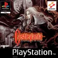

1

Castlevania: Symphony of the Night
tras pasar los botones a la fila de abajo (2026-11-04): B salta, A ataca, R hace el ataque especial o retrocede, Y se defiende con el escudo. Según las guías, Coin (Select) pausa y abre el mapa (en la primera fase no hacía nada).
Botones
 | ✕ · Saltar |
 | □ · Atacar (antes en Y) |
 | △ · Hacer el ataque especial (al principio); más adelante, retroceder de espaldas (antes en X) |
 | ○ · Defenderse con el escudo (antes en A) |
 | R1 (antes en R) |
 | L1 |
 | R2 |
 + + | Hacer un ataque rasante |
 | L2 |
 | Start · Pausar |
 | Select (⚠️ según las guías, pausa y abre el mapa) |
| + | Salir del juego |